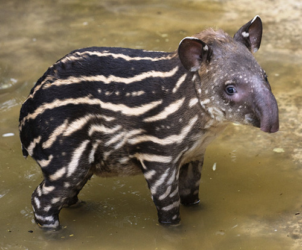
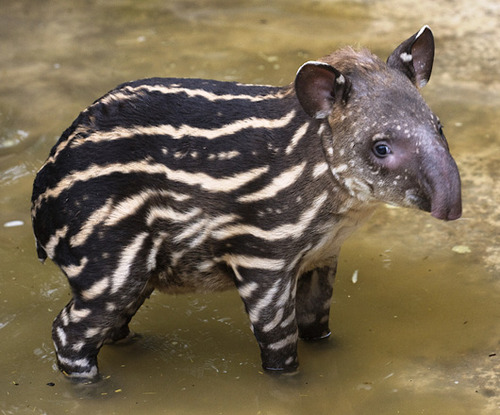

The Asian Tapir - Tapirus Indicus
What is an Asian Tapir?
The Asian Tapir, also known as the Malayan Tapir, is the largest of the five species of tapir and is the only one native to Asia. The scientific name of Tapirus Indicus refers to the species natural habitat, the East Indies. The animal can be recognized by its coloring, all black except for a light patch that extends from the shoulders to the tail bone. They use this pattern to convince predators that they are a large rock when they are sleeping. Baby tapirs usually have white stripes and spots on their back that allows them to blend in with the dappled light of the forest. Asian tapirs usually grow to be 5 ft 11 in. up to 8 ft 2 in! They have a short tail, typically 5-10 cm in length.
Behavior of Tapirs
Asian Tapirs are typically solitary animals. They often mark out large plots of land as their territory, even though it usually overlaps with other tapir's territory. They normally follow trails which they have make in the undergrowth. Tapirs are exclusively herbivores and eat a variety of around 115 species of plants, however, 30 species are typically preferred. They move slowly, stopping often to eat and sniff out the scents of other tapirs. Even though they are bulky and move slowly, when they are threatened they can run swiftly or use strong jaws and sharp teeth to defend themselves. Asian tapirs communicate with squeaks and whistles and are often most active at night though they aren't exclusively nocturnal. They prefer to eat between sunset and sunrise and taking naps in the middle of the day.

 

Conservation
Due to their large size, Asian Tapirs have few natural predators, and even killings by tigers have been reported as scarce. The main threat to the Asian tapirs is human activity, including deforestation for agricultural purposes, flooding caused by the damming of rivers for hydroelectric projects, and illegal trade. In Thailand, capture and sale of a young tapir may be worth around $5500. In areas such as Sumatra, where the population is mostly Muslim, tapirs are seldom hunted for food, as their physical similarity to pigs has made tapir meat undesired, but in some regions they are hunted for sport or shot accidentally when mistaken for other animals. They have a protected status in Malaysia, Indonesia,and Thailand, where they seek to eliminate deliberate killing of tapirs but they do not address the issue of habitat loss, and has had limited effect in reviving or maintaining the population.